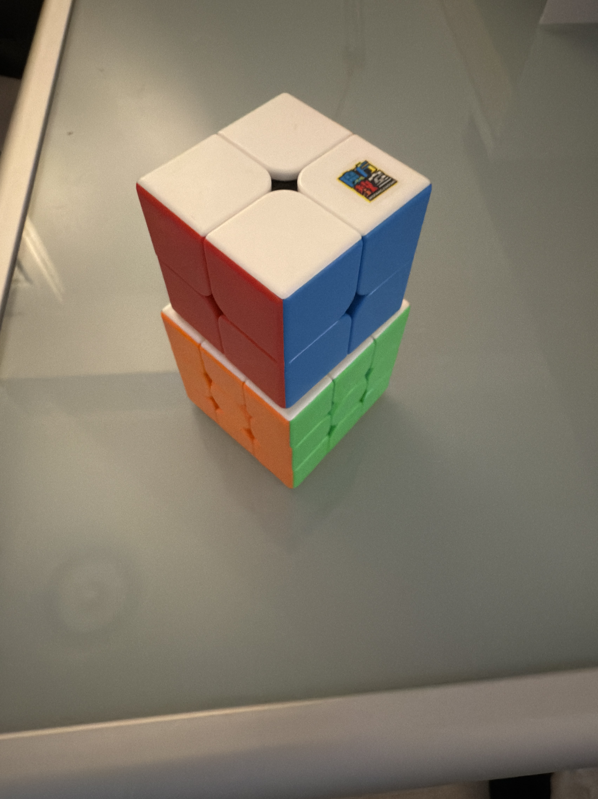

My name is Kevin Tao. I am a university student majoring in Computing Science in SFU, passionate about learning and continuously improving myself. I am proficient in Python and C++ programming and have strong communication and teamwork skills. I pay attention to detail, take initiative, and excel at problem-solving and adapting to dynamic work environments.
My Project
SkyFare is a project developed by our team as part of CMPT 276 in Spring 2025. It is designed to enhance the flight booking experience with smart recommendations and user-friendly UI.
Managed and coordinated project progress to ensure timely delivery.
Collaborated closely with team members to solve technical challenges.
Participated in hardware product development and testing to improve product quality and user experience.
Education
Simon Fraser University (2022 - 2026)
Bachelor of Science in Computing Science
Located in Vancouver, British Columbia, Canada
Moscrop Secondary School (2016 - 2022)
Graduated with distinction
Hobbies
Video Games
I love exploring different genres of gaming, from FPS shooters like CSGO to immersive RPGs like Elden Ring. Gaming is more than just entertainment for me; it's a way to challenge myself, connect with friends, and experience great stories. In games, I am constantly looking for solutions in difficult situations and improving my problem-solving skills. At the same time, the game also allows me to practice teamwork and leadership skills, especially in multiplayer collaborative games. I learned how to effectively communicate and lead the team to achieve the goal.
Rubik's Cube

Solving the Rubik's Cube has been my hobby since elementary school. Over time, I have challenged myself to improve my speed by learning new solutions and techniques. This process not only allows me to enjoy the sense of accomplishment in solving problems, but also develops my spirit of continuous exploration and research. The satisfaction I feel whenever I break my own record makes me love this intellectual challenge even more.
PC and Technology
I am passionate about computers and enjoy both hardware assembly and system optimization. I like to stay up-to-date with the latest hardware trends and often invest the money I save in PC hardware (the money I saved allowed me to get my hands on ROG's RTX 4090 graphics card). This not only enhanced my gaming experience but also opened up more possibilities for technical exploration. Through continuous learning and practice, I have gradually mastered the skills of how to maximize the performance of my hardware.
Traveling
Banff, Alberta, CanadaHangzhou, Zhejiang, ChinaBeijing, China
Travelling is an integral part of my life. It gives me the opportunity to explore new places and experience different cultures and customs. Whether it's nature or cityscapes, every trip opens my eyes to the diversity of the world.